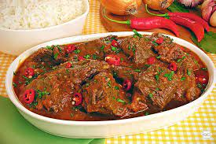

Carne de panela

Descrição da receita
carne de panela é aquele prato com cara de casa de mãe, né?
Ideal para os dias que pedem uma comida bem caseira e com gostinho
de quero mais. Aqui, você confere todas as dicas para que a carne
fique extremamente suculenta.
Ingredientes
- 1,5 kg de acém em pedaços grandes
- 1 colher de sopa de tomilho desidratado
- 1 colher de sopa de sálvia desidratada
- 1 folha de louro
- sal e pimenta do reino a gosto
- 2 xícaras de vinho tinto seco
- 1 xícara de água
- 1 cebola em cubos
- 3 cenouras em pedaços
- Salsinha a gosto
- 2 colheres de sopa de farinha de trigo misturadas com um pouco de água
Passos para o preparo
-
Em uma panela de pressão, doure os pedaços de carne em um pouco
de óleo aos poucos. Tempere com sal, pimenta, tomilho, sálvia, louro
e acrescente o vinho e a água. Cozinhe na pressão por 30 minutos.
-
Corte a cebola, cenoura e salsinha e adicione à panela junto com a
farinha hidratada. Quando pegar pressão, conte mais 20 minutos.
-
Quando a pressão tiver saído da panela, abra e retire um pouco do
caldo e a folha de louro. Sirva com arroz, purê ou polenta cremosa.